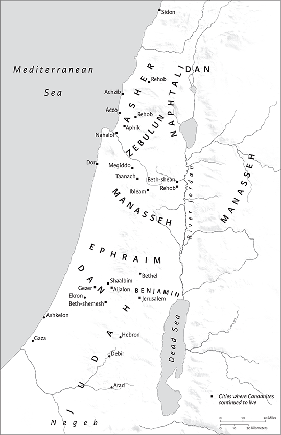
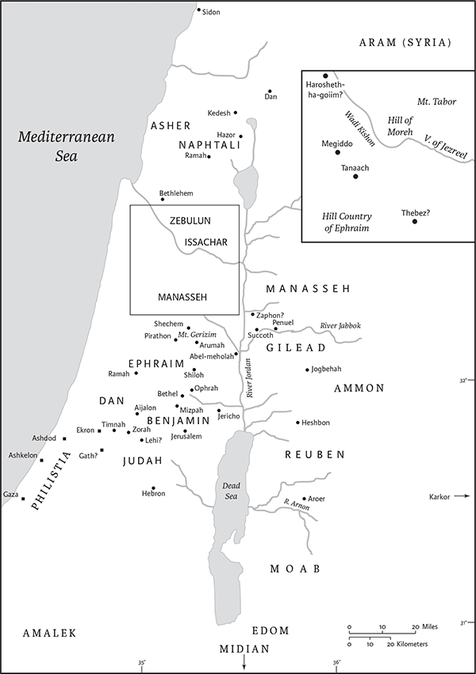

Judges
Name and Location in Canon
The book of Judges gets its name from the term used for Israel’s leaders in the transitional period between the conquest of the land in the book of Joshua and the establishment of the monarchy in the book of 1 Samuel. “Judges” (Heb shophetim) is related to the word for “justice” (mishpat); the term is used in nonbiblical sources for rulers and administrators. In the book of Judges, it is used of protagonists whose feats, often larger‐thanlife, rescued Israel from oppression by rival Iron Age peoples and who settled scores more often than legal matters.
Authorship and Literary History
Jewish tradition ascribed the book to Samuel. Modern scholars suggest that Judges is comprised of traditions that were transmitted orally and once written were copied, amplified, and edited for centuries, making the definition of “author” complicated. Its uneven texture is evidence that Judges was not composed in a single moment. Its primary fabric is prose narrative, though it contains a long poem, the Song of Deborah (ch 5). Different sections of the book have distinct editorial formulas and refrains: ch 1 contains conquest notices; chs 2–16 are dominated by a formula describing Israel’s sin, God punishment, and then God sending a judge to relieve them of their misery; the refrain “In those days there was no king in Israel” unifies chs 17–22.
Though the Song of Deborah may stem from near the end of the second millennium bce, the reference to the Assyrian invasion of Samaria in 18.30 makes it clear that Judges was not completed before 722 bce when that event occurred. Correspondences between Judges and Joshua, Samuel, and Kings have led scholars to posit the existence of a “Deuteronomistic History,” a continuous narrative that traced Israel’s history in the Promised Land from the entry into Canaan to the Babylonian exile, making the final form of Judges part of a work that describes events as late as ca. 560 bce (2 Kings 24.27), though likely revised and reworked for several more centuries.
The core of the book of Judges contains narratives about northern heroes (roughly chs 3–8). When these stories were incorporated into the Deuteronomistic History in the late seventh/early sixth century bce, Judges became part of a narrative that ended in Kings with cultural devastation attributed to religious infidelity. In order to adapt the heroic stories to its new setting, historians prefaced chs 3–8 with an editorial in the Deuteronomistic style (2.6–3.6; see also 10.6–9), added a narrative about a southern hero (Othniel, 3.7–11), and appended a downbeat coda to the Gideon narrative (8.27,33). The Deuteronomist also added stories about morally deficient or ambivalent protagonists (Abimelech, Jephthah, and Samson), and the list of “minor judges” (10.1–5; 12.8–15). Like the Deuteronomistic History of which it was a part, the negative tone of this edition of Judges contained both hopes for and prophetic critique of kingship (ch 9).
The extant book emerged when this Deuteronomistic work (roughly, chs 2–16) was framed with a beginning (1.1–2.5) and ending (chs 17–21). These final exterior strata have a clear regional bias. The initial chapters portray the southern tribe of Judah as uniquely successful and the other, northern, tribes as faithless and hapless. The final chapters focus on the misdeeds of the tribe of Dan (in the far north) and Benjamin (just north of Judah), the very sites of shrines that rivaled Judah’s own Temple in Jerusalem, and give special attention to the misdeeds of Saul’s hometown Gibeah and his tribe Benjamin. Thus, though neither is mentioned, the shadows of David and Saul, heroes of southern and northern culture respectively, loom over the concluding section.
Structure and Contents
Judges has three sections. “The days after Joshua” (1.1–2.5) sketches a picture of the various tribes’ fortunes in securing their territories against indigenous Canaanites. Compared with parallel accounts in Joshua, this introduction has a bias toward Judah (compare 1.9–13 with Josh 10.36–40; 1.21 with Josh 15.63). The introductory section ends with the account of a theophany in which the angel of the Lord explains that the failures of the non‐Judahite tribes were the result of syncretism with Canaanite religion (Judg 2.1–5).
The main section, “the days of the judges” (2.6–16.31), consists of narratives governed by a coherent editorial formula: the Israelites “do evil” and as punishment God allows a rival group to oppress them; the Israelites cry to the Lord; the Lord hears their cry and sends a “deliverer”; the enemy is defeated; and “the land has rest.” The stories of these deliverers, also called judges, grow in length and complexity from Othniel (3.7–11), an account spare in details and long on formula, to those in chs 3–5 about Ehud, Deborah, and Barak that focus on a single feat or battle. The next sections, about Gideon (chs 6–9) and Jephthah (chs 10–12), contain multiple stories about each hero. The final narrative, about Samson (chs 13–16), is a kind of biography, presenting the protagonist’s feats in a story from birth to death.
The plots in the central section follow this formula. In the final section, chs 17–21, the pattern dissolves: the tribes are fractious, the judges themselves flawed, and without centralized religious and political leadership Israel’s sense of identity as a people in covenant with the Lord was endangered by gradual assimilation to local cultures. The final section consists of two long stories about illicit shrines, horrific violence, and internecine warfare.
Interpretation
As Genesis through Kings depicts Israel walking through history with God, the plot is punctuated with ups and downs, rises and falls, covenants made and broken. Judges is one of those places where things fall apart. In its earliest version, Judges was an anthology of frontier legends about the time “when locks were long in Israel” (5.2). This hypothetical stage in the development of the book must certainly be preexilic and possibly dates prior to the fall of Samaria in 722 bce.
Once these tales were bound within the introductory and closing frames of the book, the trajectory changed. The cyclical pattern began to spiral downward toward the chaotic lawlessness of the final section. Decentralized tribal leaders could not take Israel forward. Kings, not judges, were the leaders who would assume the mantle of Moses and Joshua, and not just any kings, but Davidic kings whose shrine was the Jerusalem Temple. “There was no king” is the final refrain of Judges, suggesting the necessity of centralized political and religious authority.
Judges ends without closure, demanding that readers turn the page, as it were, to the next installment of Israel’s story. In Christian Bibles, the next book is Ruth with its genial portrait of village life during the days of the Judges, its charming and quietly powerful female characters, and the birth of King David’s grandfather. In Jewish Bibles, the next installment of the story comes in 1 Samuel with the emergence of David and his dynasty in Jerusalem.
In modern biblical scholarship, Judges has become increasingly central in several different areas of inquiry. In biblical archaeology, Judges is at the center of the contentious debates about the origins and early history of Israel. In feminist biblical interpretation, Judges with its vivid women characters and graphic depictions of violence by and against women has become a central text. And with the growing interest in literary approaches to biblical study, Judges has been rediscovered as a neglected masterpiece of Hebrew literature.
Gregory Mobley
1 After the death of Joshua, the Israelites inquired of the Lord, “Who shall go up first for us against the Canaanites, to fight against them?” 2The Lord said, “Judah shall go up. I hereby give the land into his hand.” 3Judah said to his brother Simeon, “Come up with me into the territory allotted to me, that we may fight against the Canaanites; then I too will go with you into the territory allotted to you.” So Simeon went with him. 4Then Judah went up and the Lord gave the Canaanites and the Perizzites into their hand; and they defeated ten thousand of them at Bezek. 5They came upon Adonibezek at Bezek, and fought against him, and defeated the Canaanites and the Perizzites. 6Adoni‐bezek fled; but they pursued him, and caught him, and cut off his thumbs and big toes. 7Adoni‐bezek said, “Seventy kings with their thumbs and big toes cut off used to pick up scraps under my table; as I have done, so God has paid me back.” They brought him to Jerusalem, and he died there.

Tribal conquest in ch 1. Cities marked by square bullets are locales where Canaanites continued to live.
8Then the people of Judah fought against Jerusalem and took it. They put it to the sword and set the city on fire. 9Afterward the people of Judah went down to fight against the Canaanites who lived in the hill country, in the Negeb, and in the lowland. 10Judah went against the Canaanites who lived in Hebron (the name of Hebron was formerly Kiriath‐arba); and they defeated Sheshai and Ahiman and Talmai.
11From there they went against the inhabitants of Debir (the name of Debir was formerly Kiriath‐sepher). 12Then Caleb said, “Whoever attacks Kiriath‐sepher and takes it, I will give him my daughter Achsah as wife.” 13And Othniel son of Kenaz, Caleb’s younger brother, took it; and he gave him his daughter Achsah as wife. 14When she came to him, she urged him to ask her father for a field. As she dismounted from her donkey, Caleb said to her, “What do you wish?” 15She said to him, “Give me a present; since you have set me in the land of the Negeb, give me also Gullothmayim.”a So Caleb gave her Upper Gulloth and Lower Gulloth.
16The descendants of Hobabb the Kenite, Moses’ father‐in‐law, went up with the people of Judah from the city of palms into the wilderness of Judah, which lies in the Negeb near Arad. Then they went and settled with the Amalekites.c 17Judah went with his brother Simeon, and they defeated the Canaanites who inhabited Zephath, and devoted it to destruction. So the city was called Hormah. 18Judah took Gaza with its territory, Ashkelon with its territory, and Ekron with its territory. 19The Lord was with Judah, and he took possession of the hill country, but could not drive out the inhabitants of the plain, because they had chariots of iron. 20Hebron was given to Caleb, as Moses had said; and he drove out from it the three sons of Anak. 21But the Benjaminites did not drive out the Jebusites who lived in Jerusalem; so the Jebusites have lived in Jerusalem among the Benjaminites to this day.
22The house of Joseph also went up against Bethel; and the Lord was with them. 23The house of Joseph sent out spies to Bethel (the name of the city was formerly Luz). 24When the spies saw a man coming out of the city, they said to him, “Show us the way into the city, and we will deal kindly with you.” 25So he showed them the way into the city; and they put the city to the sword, but they let the man and all his family go. 26So the man went to the land of the Hittites and built a city, and named it Luz; that is its name to this day.
27Manasseh did not drive out the inhabitants of Beth‐shean and its villages, or Taanach and its villages, or the inhabitants of Dor and its villages, or the inhabitants of Ibleam and its villages, or the inhabitants of Megiddo and its villages; but the Canaanites continued to live in that land. 28When Israel grew strong, they put the Canaanites to forced labor, but did not in fact drive them out.
29And Ephraim did not drive out the Canaanites who lived in Gezer; but the Canaanites lived among them in Gezer.
30Zebulun did not drive out the inhabitants of Kitron, or the inhabitants of Nahalol; but the Canaanites lived among them, and became subject to forced labor.
31Asher did not drive out the inhabitants of Acco, or the inhabitants of Sidon, or of Ahlab, or of Achzib, or of Helbah, or of Aphik, or of Rehob; 32but the Asherites lived among the Canaanites, the inhabitants of the land; for they did not drive them out.
33Naphtali did not drive out the inhabitants of Beth‐shemesh, or the inhabitants of Beth‐anath, but lived among the Canaanites, the inhabitants of the land; nevertheless the inhabitants of Beth‐shemesh and of Bethanath became subject to forced labor for them.
34The Amorites pressed the Danites back into the hill country; they did not allow them to come down to the plain. 35The Amorites continued to live in Har‐heres, in Aijalon, and in Shaalbim, but the hand of the house of Joseph rested heavily on them, and they became subject to forced labor. 36The border of the Amorites ran from the ascent of Akrabbim, from Sela and upward.
2 Now the angel of the Lord went up from Gilgal to Bochim, and said, “I brought you up from Egypt, and brought you into the land that I had promised to your ancestors. I said, ‘I will never break my covenant with you. 2For your part, do not make a covenant with the inhabitants of this land; tear down their altars.’ But you have not obeyed my command. See what you have done! 3So now I say, I will not drive them out before you; but they shall become adversariesa to you, and their gods shall be a snare to you.” 4When the angel of the Lord spoke these words to all the Israelites, the people lifted up their voices and wept. 5So they named that place Bochim,b and there they sacrificed to the Lord.
6When Joshua dismissed the people, the Israelites all went to their own inheritances to take possession of the land. 7The people worshiped the Lord all the days of Joshua, and all the days of the elders who outlived Joshua, who had seen all the great work that the Lord had done for Israel. 8Joshua son of Nun, the servant of the Lord, died at the age of one hundred ten years. 9So they buried him within the bounds of his inheritance in Timnath‐heres, in the hill country of Ephraim, north of Mount Gaash. 10Moreover, that whole generation was gathered to their ancestors, and another generation grew up after them, who did not know the Lord or the work that he had done for Israel.
11Then the Israelites did what was evil in the sight of the Lord and worshiped the Baals; 12and they abandoned the Lord, the God of their ancestors, who had brought them out of the land of Egypt; they followed other gods, from among the gods of the peoples who were all around them, and bowed down to them; and they provoked the Lord to anger. 13They abandoned the Lord, and worshiped Baal and the Astartes. 14So the anger of the Lord was kindled against Israel, and he gave them over to plunderers who plundered them, and he sold them into the power of their enemies all around, so that they could no longer withstand their enemies. 15Whenever they marched out, the hand of the Lord was against them to bring misfortune, as the Lord had warned them and sworn to them; and they were in great distress.
16Then the Lord raised up judges, who delivered them out of the power of those who plundered them. 17Yet they did not listen even to their judges; for they lusted after other gods and bowed down to them. They soon turned aside from the way in which their ancestors had walked, who had obeyed the commandments of the Lord; they did not follow their example. 18Whenever the Lord raised up judges for them, the Lord was with the judge, and he delivered them from the hand of their enemies all the days of the judge; for the Lord would be moved to pity by their groaning because of those who persecuted and oppressed them. 19But whenever the judge died, they would relapse and behave worse than their ancestors, following other gods, worshiping them and bowing down to them. They would not drop any of their practices or their stubborn ways. 20So the anger of the Lord was kindled against Israel; and he said, “Because this people have transgressed my covenant that I commanded their ancestors, and have not obeyed my voice, 21I will no longer drive out before them any of the nations that Joshua left when he died.” 22In order to test Israel, whether or not they would take care to walk in the way of the Lord as their ancestors did, 23the Lord had left those nations, not driving them out at once, and had not handed them over to Joshua.

The geography of the book of Judges. Square boxes indicate Philistine cities.
3 Now these are the nations that the Lord left to test all those in Israel who had no experience of any war in Canaan 2(it was only that successive generations of Israelites might know war, to teach those who had no experience of it before): 3the five lords of the Philistines, and all the Canaanites, and the Sidonians, and the Hivites who lived on Mount Lebanon, from Mount Baal‐hermon as far as Lebo‐hamath. 4They were for the testing of Israel, to know whether Israel would obey the commandments of the Lord, which he commanded their ancestors by Moses. 5So the Israelites lived among the Canaanites, the Hittites, the Amorites, the Perizzites, the Hivites, and the Jebusites; 6and they took their daughters as wives for themselves, and their own daughters they gave to their sons; and they worshiped their gods.
7The Israelites did what was evil in the sight of the Lord, forgetting the Lord their God, and worshiping the Baals and the Asherahs. 8Therefore the anger of the Lord was kindled against Israel, and he sold them into the hand of King Cushan‐rishathaim of Aram‐naharaim; and the Israelites served Cushan‐rishathaim eight years. 9But when the Israelites cried out to the Lord, the Lord raised up a deliverer for the Israelites, who delivered them, Othniel son of Kenaz, Caleb’s younger brother. 10The spirit of the Lord came upon him, and he judged Israel; he went out to war, and the Lord gave King Cushanrishathaim of Aram into his hand; and his hand prevailed over Cushan‐rishathaim. 11So the land had rest forty years. Then Othniel son of Kenaz died.
12The Israelites again did what was evil in the sight of the Lord; and the Lord strengthened King Eglon of Moab against Israel, because they had done what was evil in the sight of the Lord. 13In alliance with the Ammonites and the Amalekites, he went and defeated Israel; and they took possession of the city of palms. 14So the Israelites served King Eglon of Moab eighteen years.
15But when the Israelites cried out to the Lord, the Lord raised up for them a deliverer, Ehud son of Gera, the Benjaminite, a lefthanded man. The Israelites sent tribute by him to King Eglon of Moab. 16Ehud made for himself a sword with two edges, a cubit in length; and he fastened it on his right thigh under his clothes. 17Then he presented the tribute to King Eglon of Moab. Now Eglon was a very fat man. 18When Ehud had finished presenting the tribute, he sent the people who carried the tribute on their way. 19But he himself turned back at the sculptured stones near Gilgal, and said, “I have a secret message for you, O king.” So the king said,a “Silence!” and all his attendants went out from his presence. 20Ehud came to him, while he was sitting alone in his cool roof chamber, and said, “I have a message from God for you.” So he rose from his seat. 21Then Ehud reached with his left hand, took the sword from his right thigh, and thrust it into Eglon’sb belly; 22the hilt also went in after the blade, and the fat closed over the blade, for he did not draw the sword out of his belly; and the dirt came out.c 23Then Ehud went out into the vestibule,d and closed the doors of the roof chamber on him, and locked them.
24After he had gone, the servants came. When they saw that the doors of the roof chamber were locked, they thought, “He must be relieving himself e in the cool chamber.” 25So they waited until they were embarrassed. When he still did not open the doors of the roof chamber, they took the key and opened them. There was their lord lying dead on the floor.
26Ehud escaped while they delayed, and passed beyond the sculptured stones, and escaped to Seirah. 27When he arrived, he sounded the trumpet in the hill country of Ephraim; and the Israelites went down with him from the hill country, having him at their head. 28He said to them, “Follow after me; for the Lord has given your enemies the Moabites into your hand.” So they went down after him, and seized the fords of the Jordan against the Moabites, and allowed no one to cross over. 29At that time they killed about ten thousand of the Moabites, all strong, able‐bodied men; no one escaped. 30So Moab was subdued that day under the hand of Israel. And the land had rest eighty years.
31After him came Shamgar son of Anath, who killed six hundred of the Philistines with an oxgoad. He too delivered Israel.
4 The Israelites again did what was evil in the sight of the Lord, after Ehud died. 2So the Lord sold them into the hand of King Jabin of Canaan, who reigned in Hazor; the commander of his army was Sisera, who lived in Harosheth‐ha‐goiim. 3Then the Israelites cried out to the Lord for help; for he had nine hundred chariots of iron, and had oppressed the Israelites cruelly twenty years.
4At that time Deborah, a prophetess, wife of Lappidoth, was judging Israel. 5She used to sit under the palm of Deborah between Ramah and Bethel in the hill country of Ephraim; and the Israelites came up to her for judgment. 6She sent and summoned Barak son of Abinoam from Kedesh in Naphtali, and said to him, “The Lord, the God of Israel, commands you, ‘Go, take position at Mount Tabor, bringing ten thousand from the tribe of Naphtali and the tribe of Zebulun. 7I will draw out Sisera, the general of Jabin’s army, to meet you by the Wadi Kishon with his chariots and his troops; and I will give him into your hand.’” 8Barak said to her, “If you will go with me, I will go; but if you will not go with me, I will not go.” 9And she said, “I will surely go with you; nevertheless, the road on which you are going will not lead to your glory, for the Lord will sell Sisera into the hand of a woman.” Then Deborah got up and went with Barak to Kedesh. 10Barak summoned Zebulun and Naphtali to Kedesh; and ten thousand warriors went up behind him; and Deborah went up with him.
11Now Heber the Kenite had separated from the other Kenites,a that is, the descendants of Hobab the father‐in‐law of Moses, and had encamped as far away as Elonbezaanannim, which is near Kedesh.
12When Sisera was told that Barak son of Abinoam had gone up to Mount Tabor, 13Sisera called out all his chariots, nine hundred chariots of iron, and all the troops who were with him, from Harosheth‐ha‐goiim to the Wadi Kishon. 14Then Deborah said to Barak, “Up! For this is the day on which the Lord has given Sisera into your hand. The Lord is indeed going out before you.” So Barak went down from Mount Tabor with ten thousand warriors following him. 15And the Lord threw Sisera and all his chariots and all his army into a panicb before Barak; Sisera got down from his chariot and fled away on foot, 16while Barak pursued the chariots and the army to Harosheth‐ha‐goiim. All the army of Sisera fell by the sword; no one was left.
17Now Sisera had fled away on foot to the tent of Jael wife of Heber the Kenite; for there was peace between King Jabin of Hazor and the clan of Heber the Kenite. 18Jael came out to meet Sisera, and said to him, “Turn aside, my lord, turn aside to me; have no fear.” So he turned aside to her into the tent, and she covered him with a rug. 19Then he said to her, “Please give me a little water to drink; for I am thirsty.” So she opened a skin of milk and gave him a drink and covered him. 20He said to her, “Stand at the entrance of the tent, and if anybody comes and asks you, ‘Is anyone here?’ say, ‘No.’” 21But Jael wife of Heber took a tent peg, and took a hammer in her hand, and went softly to him and drove the peg into his temple, until it went down into the ground—he was lying fast asleep from weariness—and he died. 22Then, as Barak came in pursuit of Sisera, Jael went out to meet him, and said to him, “Come, and I will show you the man whom you are seeking.” So he went into her tent; and there was Sisera lying dead, with the tent peg in his temple.
23So on that day God subdued King Jabin of Canaan before the Israelites. 24Then the hand of the Israelites bore harder and harder on King Jabin of Canaan, until they destroyed King Jabin of Canaan.
5 Then Deborah and Barak son of Abinoam sang on that day, saying:
3“Hear, O kings; give ear, O princes;
to the Lord I will sing,
I will make melody to the Lord, the God of Israel.
4“Lord, when you went out from Seir,
when you marched from the region of Edom,
the earth trembled,
and the heavens poured,
the clouds indeed poured water.
5The mountains quaked before the Lord, the One of Sinai,
before the Lord, the God of Israel.
6“In the days of Shamgar son of Anath,
in the days of Jael, caravans ceased
and travelers kept to the byways.
7The peasantry prospered in Israel,
they grew fat on plunder,
because you arose, Deborah,
arose as a mother in Israel.
8When new gods were chosen,
then war was in the gates.
Was shield or spear to be seen
among forty thousand in Israel?
9My heart goes out to the commanders of Israel
who offered themselves willingly among the people.
Bless the Lord.
10“Tell of it, you who ride on white donkeys,
you who sit on rich carpetsb
and you who walk by the way.
11To the sound of musiciansb at the watering places,
there they repeat the triumphs of the Lord,
the triumphs of his peasantry in Israel.
“Then down to the gates marched the people of the Lord.
12“Awake, awake, Deborah!
Awake, awake, utter a song!
Arise, Barak, lead away your captives,
O son of Abinoam.
13Then down marched the remnant of the noble;
the people of the Lord marched down for hima against the mighty.
14From Ephraim they set outb into the valley,c
following you, Benjamin, with your kin;
from Machir marched down the commanders,
and from Zebulun those who bear the marshal’s staff;
15the chiefs of Issachar came with Deborah,
and Issachar faithful to Barak;
into the valley they rushed out at his heels.
Among the clans of Reuben
there were great searchings of heart.
16Why did you tarry among the sheepfolds,
to hear the piping for the flocks?
Among the clans of Reuben
there were great searchings of heart.
17Gilead stayed beyond the Jordan;
and Dan, why did he abide with the ships?
Asher sat still at the coast of the sea,
settling down by his landings.
18Zebulun is a people that scorned death;
Naphtali too, on the heights of the field.
19“The kings came, they fought;
then fought the kings of Canaan,
at Taanach, by the waters of Megiddo;
they got no spoils of silver.
20The stars fought from heaven,
from their courses they fought against Sisera.
21The torrent Kishon swept them away,
the onrushing torrent, the torrent Kishon.
March on, my soul, with might!
22“Then loud beat the horses’ hoofs
with the galloping, galloping of his steeds.
23“Curse Meroz, says the angel of the Lord,
curse bitterly its inhabitants,
because they did not come to the help of the Lord,
to the help of the Lord against the mighty.
24“Most blessed of women be Jael,
the wife of Heber the Kenite,
of tent‐dwelling women most blessed.
25He asked water and she gave him milk,
she brought him curds in a lordly bowl.
26She put her hand to the tent peg
and her right hand to the workmen’s mallet;
she struck Sisera a blow,
she crushed his head,
she shattered and pierced his temple.
27He sank, he fell,
he lay still at her feet;
at her feet he sank, he fell;
where he sank, there he fell dead.
28“Out of the window she peered,
the mother of Sisera gazeda through the lattice:
‘Why is his chariot so long in coming?
Why tarry the hoofbeats of his chariots?’
29Her wisest ladies make answer,
indeed, she answers the question herself:
30‘Are they not finding and dividing the spoil?—
A girl or two for every man;
spoil of dyed stuffs for Sisera,
spoil of dyed stuffs embroidered,
two pieces of dyed work embroidered for my neck as spoil?’
31“So perish all your enemies, O Lord!
But may your friends be like the sun as it rises in its might.”
And the land had rest forty years.
6 The Israelites did what was evil in the sight of the Lord, and the Lord gave them into the hand of Midian seven years. 2The hand of Midian prevailed over Israel; and because of Midian the Israelites provided for themselves hiding places in the mountains, caves and strongholds. 3For whenever the Israelites put in seed, the Midianites and the Amalekites and the people of the east would come up against them. 4They would encamp against them and destroy the produce of the land, as far as the neighborhood of Gaza, and leave no sustenance in Israel, and no sheep or ox or donkey. 5For they and their livestock would come up, and they would even bring their tents, as thick as locusts; neither they nor their camels could be counted; so they wasted the land as they came in. 6Thus Israel was greatly impoverished because of Midian; and the Israelites cried out to the Lord for help.
7When the Israelites cried to the Lord on account of the Midianites, 8the Lord sent a prophet to the Israelites; and he said to them, “Thus says the Lord, the God of Israel: I led you up from Egypt, and brought you out of the house of slavery; 9and I delivered you from the hand of the Egyptians, and from the hand of all who oppressed you, and drove them out before you, and gave you their land; 10and I said to you, ‘I am the Lord your God; you shall not pay reverence to the gods of the Amorites, in whose land you live.’ But you have not given heed to my voice.”
11Now the angel of the Lord came and sat under the oak at Ophrah, which belonged to Joash the Abiezrite, as his son Gideon was beating out wheat in the wine press, to hide it from the Midianites. 12The angel of the Lord appeared to him and said to him, “The Lord is with you, you mighty warrior.” 13Gideon answered him, “But sir, if the Lord is with us, why then has all this happened to us? And where are all his wonderful deeds that our ancestors recounted to us, saying, ‘Did not the Lord bring us up from Egypt?’ But now the Lord has cast us off, and given us into the hand of Midian.” 14Then the Lord turned to him and said, “Go in this might of yours and deliver Israel from the hand of Midian; I hereby commission you.” 15He responded, “But sir, how can I deliver Israel? My clan is the weakest in Manasseh, and I am the least in my family.” 16The Lord said to him, “But I will be with you, and you shall strike down the Midianites, every one of them.” 17Then he said to him, “If now I have found favor with you, then show me a sign that it is you who speak with me. 18Do not depart from here until I come to you, and bring out my present, and set it before you.” And he said, “I will stay until you return.”
19So Gideon went into his house and prepared a kid, and unleavened cakes from an ephah of flour; the meat he put in a basket, and the broth he put in a pot, and brought them to him under the oak and presented them. 20The angel of God said to him, “Take the meat and the unleavened cakes, and put them on this rock, and pour out the broth.” And he did so. 21Then the angel of the Lord reached out the tip of the staff that was in his hand, and touched the meat and the unleavened cakes; and fire sprang up from the rock and consumed the meat and the unleavened cakes; and the angel of the Lord vanished from his sight. 22Then Gideon perceived that it was the angel of the Lord; and Gideon said, “Help me, Lord God! For I have seen the angel of the Lord face to face.” 23But the Lord said to him, “Peace be to you; do not fear, you shall not die.” 24Then Gideon built an altar there to the Lord, and called it, The Lord is peace. To this day it still stands at Ophrah, which belongs to the Abiezrites.
25That night the Lord said to him, “Take your father’s bull, the second bull seven years old, and pull down the altar of Baal that belongs to your father, and cut down the sacred polea that is beside it; 26and build an altar to the Lord your God on the top of the stronghold here, in proper order; then take the second bull, and offer it as a burnt offering with the wood of the sacred polea that you shall cut down.” 27So Gideon took ten of his servants, and did as the Lord had told him; but because he was too afraid of his family and the townspeople to do it by day, he did it by night.
28When the townspeople rose early in the morning, the altar of Baal was broken down, and the sacred polea beside it was cut down, and the second bull was offered on the altar that had been built. 29So they said to one another, “Who has done this?” After searching and inquiring, they were told, “Gideon son of Joash did it.” 30Then the townspeople said to Joash, “Bring out your son, so that he may die, for he has pulled down the altar of Baal and cut down the sacred polea beside it.” 31But Joash said to all who were arrayed against him, “Will you contend for Baal? Or will you defend his cause? Whoever contends for him shall be put to death by morning. If he is a god, let him contend for himself, because his altar has been pulled down.” 32Therefore on that day Gideonb was called Jerubbaal, that is to say, “Let Baal contend against him,” because he pulled down his altar.
33Then all the Midianites and the Amalekites and the people of the east came together, and crossing the Jordan they encamped in the Valley of Jezreel. 34But the spirit of the Lord took possession of Gideon; and he sounded the trumpet, and the Abiezrites were called out to follow him. 35He sent messengers throughout all Manasseh, and they too were called out to follow him. He also sent messengers to Asher, Zebulun, and Naphtali, and they went up to meet them.
36Then Gideon said to God, “In order to see whether you will deliver Israel by my hand, as you have said, 37I am going to lay a fleece of wool on the threshing floor; if there is dew on the fleece alone, and it is dry on all the ground, then I shall know that you will deliver Israel by my hand, as you have said.” 38And it was so. When he rose early next morning and squeezed the fleece, he wrung enough dew from the fleece to fill a bowl with water. 39Then Gideon said to God, “Do not let your anger burn against me, let me speak one more time; let me, please, make trial with the fleece just once more; let it be dry only on the fleece, and on all the ground let there be dew.” 40And God did so that night. It was dry on the fleece only, and on all the ground there was dew.
7 Then Jerubbaal (that is, Gideon) and all the troops that were with him rose early and encamped beside the spring of Harod; and the camp of Midian was north of them, belowc the hill of Moreh, in the valley.
2The Lord said to Gideon, “The troops with you are too many for me to give the Midianites into their hand. Israel would only take the credit away from me, saying, ‘My own hand has delivered me.’ 3Now therefore proclaim this in the hearing of the troops, ‘Whoever is fearful and trembling, let him return home.’” Thus Gideon sifted them out;a twenty‐two thousand returned, and ten thousand remained.
4Then the Lord said to Gideon, “The troops are still too many; take them down to the water and I will sift them out for you there. When I say, ‘This one shall go with you,’ he shall go with you; and when I say, ‘This one shall not go with you,’ he shall not go.” 5So he brought the troops down to the water; and the Lord said to Gideon, “All those who lap the water with their tongues, as a dog laps, you shall put to one side; all those who kneel down to drink, putting their hands to their mouths,b you shall put to the other side.” 6The number of those that lapped was three hundred; but all the rest of the troops knelt down to drink water. 7Then the Lord said to Gideon, “With the three hundred that lapped I will deliver you, and give the Midianites into your hand. Let all the others go to their homes.” 8So he took the jars of the troops from their hands,c and their trumpets; and he sent all the rest of Israel back to their own tents, but retained the three hundred. The camp of Midian was below him in the valley.
9That same night the Lord said to him, “Get up, attack the camp; for I have given it into your hand. 10But if you fear to attack, go down to the camp with your servant Purah; 11and you shall hear what they say, and afterward your hands shall be strengthened to attack the camp.” Then he went down with his servant Purah to the outposts of the armed men that were in the camp. 12The Midianites and the Amalekites and all the people of the east lay along the valley as thick as locusts; and their camels were without number, countless as the sand on the seashore. 13When Gideon arrived, there was a man telling a dream to his comrade; and he said, “I had a dream, and in it a cake of barley bread tumbled into the camp of Midian, and came to the tent, and struck it so that it fell; it turned upside down, and the tent collapsed.” 14And his comrade answered, “This is no other than the sword of Gideon son of Joash, a man of Israel; into his hand God has given Midian and all the army.”
15When Gideon heard the telling of the dream and its interpretation, he worshiped; and he returned to the camp of Israel, and said, “Get up; for the Lord has given the army of Midian into your hand.” 16After he divided the three hundred men into three companies, and put trumpets into the hands of all of them, and empty jars, with torches inside the jars, 17he said to them, “Look at me, and do the same; when I come to the outskirts of the camp, do as I do. 18When I blow the trumpet, I and all who are with me, then you also blow the trumpets around the whole camp, and shout, ‘For the Lord and for Gideon!’”
19So Gideon and the hundred who were with him came to the outskirts of the camp at the beginning of the middle watch, when they had just set the watch; and they blew the trumpets and smashed the jars that were in their hands. 20So the three companies blew the trumpets and broke the jars, holding in their left hands the torches, and in their right hands the trumpets to blow; and they cried, “A sword for the Lord and for Gideon!” 21Every man stood in his place all around the camp, and all the men in camp ran; they cried out and fled. 22When they blew the three hundred trumpets, the Lord set every man’s sword against his fellow and against all the army; and the army fled as far as Bethshittah toward Zererah,a as far as the border of Abel‐meholah, by Tabbath. 23And the men of Israel were called out from Naphtali and from Asher and from all Manasseh, and they pursued after the Midianites.
24Then Gideon sent messengers throughout all the hill country of Ephraim, saying, “Come down against the Midianites and seize the waters against them, as far as Bethbarah, and also the Jordan.” So all the men of Ephraim were called out, and they seized the waters as far as Beth‐barah, and also the Jordan. 25They captured the two captains of Midian, Oreb and Zeeb; they killed Oreb at the rock of Oreb, and Zeeb they killed at the wine press of Zeeb, as they pursued the Midianites. They brought the heads of Oreb and Zeeb to Gideon beyond the Jordan.
8 Then the Ephraimites said to him, “What have you done to us, not to call us when you went to fight against the Midianites?” And they upbraided him violently. 2So he said to them, “What have I done now in comparison with you? Is not the gleaning of the grapes of Ephraim better than the vintage of Abiezer? 3God has given into your hands the captains of Midian, Oreb and Zeeb; what have I been able to do in comparison with you?” When he said this, their anger against him subsided.
4Then Gideon came to the Jordan and crossed over, he and the three hundred who were with him, exhausted and famished.b 5So he said to the people of Succoth, “Please give some loaves of bread to my followers, for they are exhausted, and I am pursuing Zebah and Zalmunna, the kings of Midian.” 6But the officials of Succoth said, “Do you already have in your possession the hands of Zebah and Zalmunna, that we should give bread to your army?” 7Gideon replied, “Well then, when the Lord has given Zebah and Zalmunna into my hand, I will trample your flesh on the thorns of the wilderness and on briers.” 8From there he went up to Penuel, and made the same request of them; and the people of Penuel answered him as the people of Succoth had answered. 9So he said to the people of Penuel, “When I come back victorious, I will break down this tower.”
10Now Zebah and Zalmunna were in Karkor with their army, about fifteen thousand men, all who were left of all the army of the people of the east; for one hundred twenty thousand men bearing arms had fallen. 11So Gideon went up by the caravan route east of Nobah and Jogbehah, and attacked the army; for the army was off its guard. 12Zebah and Zalmunna fled; and he pursued them and took the two kings of Midian, Zebah and Zalmunna, and threw all the army into a panic.
13When Gideon son of Joash returned from the battle by the ascent of Heres, 14he caught a young man, one of the people of Succoth, and questioned him; and he listed for him the officials and elders of Succoth, seventy‐seven people. 15Then he came to the people of Succoth, and said, “Here are Zebah and Zalmunna, about whom you taunted me, saying, ‘Do you already have in your possession the hands of Zebah and Zalmunna, that we should give bread to your troops who are exhausted?’” 16So he took the elders of the city and he took thorns of the wilderness and briers and with them he trampleda the people of Succoth. 17He also broke down the tower of Penuel, and killed the men of the city.
18Then he said to Zebah and Zalmunna, “What about the men whom you killed at Tabor?” They answered, “As you are, so were they, every one of them; they resembled the sons of a king.” 19And he replied, “They were my brothers, the sons of my mother; as the Lord lives, if you had saved them alive, I would not kill you.” 20So he said to Jether his firstborn, “Go kill them!” But the boy did not draw his sword, for he was afraid, because he was still a boy. 21Then Zebah and Zalmunna said, “You come and kill us; for as the man is, so is his strength.” So Gideon proceeded to kill Zebah and Zalmunna; and he took the crescents that were on the necks of their camels.
22Then the Israelites said to Gideon, “Rule over us, you and your son and your grandson also; for you have delivered us out of the hand of Midian.” 23Gideon said to them, “I will not rule over you, and my son will not rule over you; the Lord will rule over you.” 24Then Gideon said to them, “Let me make a request of you; each of you give me an earring he has taken as booty.” (For the enemyb had golden earrings, because they were Ishmaelites.) 25“We will willingly give them,” they answered. So they spread a garment, and each threw into it an earring he had taken as booty. 26The weight of the golden earrings that he requested was one thousand seven hundred shekels of gold (apart from the crescents and the pendants and the purple garments worn by the kings of Midian, and the collars that were on the necks of their camels). 27Gideon made an ephod of it and put it in his town, in Ophrah; and all Israel prostituted themselves to it there, and it became a snare to Gideon and to his family. 28So Midian was subdued before the Israelites, and they lifted up their heads no more. So the land had rest forty years in the days of Gideon.
29Jerubbaal son of Joash went to live in his own house. 30Now Gideon had seventy sons, his own offspring, for he had many wives. 31His concubine who was in Shechem also bore him a son, and he named him Abimelech. 32Then Gideon son of Joash died at a good old age, and was buried in the tomb of his father Joash at Ophrah of the Abiezrites.
33As soon as Gideon died, the Israelites relapsed and prostituted themselves with the Baals, making Baal‐berith their god. 34The Israelites did not remember the Lord their God, who had rescued them from the hand of all their enemies on every side; 35and they did not exhibit loyalty to the house of Jerubbaal (that is, Gideon) in return for all the good that he had done to Israel.
9 Now Abimelech son of Jerubbaal went to Shechem to his mother’s kinsfolk and said to them and to the whole clan of his mother’s family, 2“Say in the hearing of all the lords of Shechem, ‘Which is better for you, that all seventy of the sons of Jerubbaal rule over you, or that one rule over you?’ Remember also that I am your bone and your flesh.” 3So his mother’s kinsfolk spoke all these words on his behalf in the hearing of all the lords of Shechem; and their hearts inclined to follow Abimelech, for they said, “He is our brother.” 4They gave him seventy pieces of silver out of the temple of Baal‐berith with which Abimelech hired worthless and reckless fellows, who followed him. 5He went to his father’s house at Ophrah, and killed his brothers the sons of Jerubbaal, seventy men, on one stone; but Jotham, the youngest son of Jerubbaal, survived, for he hid himself. 6Then all the lords of Shechem and all Beth‐millo came together, and they went and made Abimelech king, by the oak of the pillara at Shechem.
7When it was told to Jotham, he went and stood on the top of Mount Gerizim, and cried aloud and said to them, “Listen to me, you lords of Shechem, so that God may listen to you.
8The trees once went out
to anoint a king over themselves.
So they said to the olive tree,
‘Reign over us.’
9The olive tree answered them,
‘Shall I stop producing my rich oil
by which gods and mortals are honored,
and go to sway over the trees?’
10Then the trees said to the fig tree,
‘You come and reign over us.’
11But the fig tree answered them,
‘Shall I stop producing my sweetness
and my delicious fruit,
and go to sway over the trees?’
12Then the trees said to the vine,
‘You come and reign over us.’
13But the vine said to them,
‘Shall I stop producing my wine
that cheers gods and mortals,
and go to sway over the trees?’
14So all the trees said to the bramble,
‘You come and reign over us.’
15And the bramble said to the trees,
‘If in good faith you are anointing me king over you,
then come and take refuge in my shade;
but if not, let fire come out of the bramble
and devour the cedars of Lebanon.’
16“Now therefore, if you acted in good faith and honor when you made Abimelech king, and if you have dealt well with Jerubbaal and his house, and have done to him as his actions deserved— 17for my father fought for you, and risked his life, and rescued you from the hand of Midian; 18but you have risen up against my father’s house this day, and have killed his sons, seventy men on one stone, and have made Abimelech, the son of his slave woman, king over the lords of Shechem, because he is your kinsman— 19if, I say, you have acted in good faith and honor with Jerubbaal and with his house this day, then rejoice in Abimelech, and let him also rejoice in you; 20but if not, let fire come out from Abimelech, and devour the lords of Shechem, and Beth‐millo; and let fire come out from the lords of Shechem, and from Beth‐millo, and devour Abimelech.” 21Then Jotham ran away and fled, going to Beer, where he remained for fear of his brother Abimelech.
22Abimelech ruled over Israel three years. 23But God sent an evil spirit between Abimelech and the lords of Shechem; and the lords of Shechem dealt treacherously with Abimelech. 24This happened so that the violence done to the seventy sons of Jerubbaal might be avengeda and their blood be laid on their brother Abimelech, who killed them, and on the lords of Shechem, who strengthened his hands to kill his brothers. 25So, out of hostility to him, the lords of Shechem set ambushes on the mountain tops. They robbed all who passed by them along that way; and it was reported to Abimelech.
26When Gaal son of Ebed moved into Shechem with his kinsfolk, the lords of Shechem put confidence in him. 27They went out into the field and gathered the grapes from their vineyards, trod them, and celebrated. Then they went into the temple of their god, ate and drank, and ridiculed Abimelech. 28Gaal son of Ebed said, “Who is Abimelech, and who are we of Shechem, that we should serve him? Did not the son of Jerubbaal and Zebul his officer serve the men of Hamor father of Shechem? Why then should we serve him? 29If only this people were under my command! Then I would remove Abimelech; I would saya to him, ‘Increase your army, and come out.’”
30When Zebul the ruler of the city heard the words of Gaal son of Ebed, his anger was kindled. 31He sent messengers to Abimelech at Arumah,b saying, “Look, Gaal son of Ebed and his kinsfolk have come to Shechem, and they are stirring upc the city against you. 32Now therefore, go by night, you and the troops that are with you, and lie in wait in the fields. 33Then early in the morning, as soon as the sun rises, get up and rush on the city; and when he and the troops that are with him come out against you, you may deal with them as best you can.”
34So Abimelech and all the troops with him got up by night and lay in wait against Shechem in four companies. 35When Gaal son of Ebed went out and stood in the entrance of the gate of the city, Abimelech and the troops with him rose from the ambush. 36And when Gaal saw them, he said to Zebul, “Look, people are coming down from the mountain tops!” And Zebul said to him, “The shadows on the mountains look like people to you.” 37Gaal spoke again and said, “Look, people are coming down from Tabbur‐erez, and one company is coming from the direction of Elon‐meonenim.”d 38Then Zebul said to him, “Where is your boaste now, you who said, ‘Who is Abimelech, that we should serve him?’ Are not these the troops you made light of? Go out now and fight with them.” 39So Gaal went out at the head of the lords of Shechem, and fought with Abimelech. 40Abimelech chased him, and he fled before him. Many fell wounded, up to the entrance of the gate. 41So Abimelech resided at Arumah; and Zebul drove out Gaal and his kinsfolk, so that they could not live on at Shechem.
42On the following day the people went out into the fields. When Abimelech was told, 43he took his troops and divided them into three companies, and lay in wait in the fields. When he looked and saw the people coming out of the city, he rose against them and killed them. 44Abimelech and the company that wasf with him rushed forward and stood at the entrance of the gate of the city, while the two companies rushed on all who were in the fields and killed them. 45Abimelech fought against the city all that day; he took the city, and killed the people that were in it; and he razed the city and sowed it with salt.
46When all the lords of the Tower of Shechem heard of it, they entered the stronghold of the temple of El‐berith. 47Abimelech was told that all the lords of the Tower of Shechem were gathered together. 48So Abimelech went up to Mount Zalmon, he and all the troops that were with him. Abimelech took an ax in his hand, cut down a bundle of brushwood, and took it up and laid it on his shoulder. Then he said to the troops with him, “What you have seen me do, do quickly, as I have done.” 49So every one of the troops cut down a bundle and following Abimelech put it against the stronghold, and they set the stronghold on fire over them, so that all the people of the Tower of Shechem also died, about a thousand men and women.
50Then Abimelech went to Thebez, and encamped against Thebez, and took it. 51But there was a strong tower within the city, and all the men and women and all the lords of the city fled to it and shut themselves in; and they went to the roof of the tower. 52Abimelech came to the tower, and fought against it, and came near to the entrance of the tower to burn it with fire. 53But a certain woman threw an upper millstone on Abimelech’s head, and crushed his skull. 54Immediately he called to the young man who carried his armor and said to him, “Draw your sword and kill me, so people will not say about me, ‘A woman killed him.’” So the young man thrust him through, and he died. 55When the Israelites saw that Abimelech was dead, they all went home. 56Thus God repaid Abimelech for the crime he committed against his father in killing his seventy brothers; 57and God also made all the wickedness of the people of Shechem fall back on their heads, and on them came the curse of Jotham son of Jerubbaal.
10 After Abimelech, Tola son of Puah son of Dodo, a man of Issachar, who lived at Shamir in the hill country of Ephraim, rose to deliver Israel. 2He judged Israel twentythree years. Then he died, and was buried at Shamir.
3After him came Jair the Gileadite, who judged Israel twenty‐two years. 4He had thirty sons who rode on thirty donkeys; and they had thirty towns, which are in the land of Gilead, and are called Havvoth‐jair to this day. 5Jair died, and was buried in Kamon.
6The Israelites again did what was evil in the sight of the Lord, worshiping the Baals and the Astartes, the gods of Aram, the gods of Sidon, the gods of Moab, the gods of the Ammonites, and the gods of the Philistines. Thus they abandoned the Lord, and did not worship him. 7So the anger of the Lord was kindled against Israel, and he sold them into the hand of the Philistines and into the hand of the Ammonites, 8and they crushed and oppressed the Israelites that year. For eighteen years they oppressed all the Israelites that were beyond the Jordan in the land of the Amorites, which is in Gilead. 9The Ammonites also crossed the Jordan to fight against Judah and against Benjamin and against the house of Ephraim; so that Israel was greatly distressed.
10So the Israelites cried to the Lord, saying, “We have sinned against you, because we have abandoned our God and have worshiped the Baals.” 11And the Lord said to the Israelites, “Did I not deliver youa from the Egyptians and from the Amorites, from the Ammonites and from the Philistines? 12The Sidonians also, and the Amalekites, and the Maonites, oppressed you; and you cried to me, and I delivered you out of their hand. 13Yet you have abandoned me and worshiped other gods; therefore I will deliver you no more. 14Go and cry to the gods whom you have chosen; let them deliver you in the time of your distress.” 15And the Israelites said to the Lord, “We have sinned; do to us whatever seems good to you; but deliver us this day!” 16So they put away the foreign gods from among them and worshiped the Lord; and he could no longer bear to see Israel suffer.
17Then the Ammonites were called to arms, and they encamped in Gilead; and the Israelites came together, and they encamped at Mizpah. 18The commanders of the people of Gilead said to one another, “Who will begin the fight against the Ammonites? He shall be head over all the inhabitants of Gilead.”
11 Now Jephthah the Gileadite, the son of a prostitute, was a mighty warrior. Gilead was the father of Jephthah. 2Gilead’s wife also bore him sons; and when his wife’s sons grew up, they drove Jephthah away, saying to him, “You shall not inherit anything in our father’s house; for you are the son of another woman.” 3Then Jephthah fled from his brothers and lived in the land of Tob. Outlaws collected around Jephthah and went raiding with him.
4After a time the Ammonites made war against Israel. 5And when the Ammonites made war against Israel, the elders of Gilead went to bring Jephthah from the land of Tob. 6They said to Jephthah, “Come and be our commander, so that we may fight with the Ammonites.” 7But Jephthah said to the elders of Gilead, “Are you not the very ones who rejected me and drove me out of my father’s house? So why do you come to me now when you are in trouble?” 8The elders of Gilead said to Jephthah, “Nevertheless, we have now turned back to you, so that you may go with us and fight with the Ammonites, and become head over us, over all the inhabitants of Gilead.” 9Jephthah said to the elders of Gilead, “If you bring me home again to fight with the Ammonites, and the Lord gives them over to me, I will be your head.” 10And the elders of Gilead said to Jephthah, “The Lord will be witness between us; we will surely do as you say.” 11So Jephthah went with the elders of Gilead, and the people made him head and commander over them; and Jephthah spoke all his words before the Lord at Mizpah.
12Then Jephthah sent messengers to the king of the Ammonites and said, “What is there between you and me, that you have come to me to fight against my land?” 13The king of the Ammonites answered the messengers of Jephthah, “Because Israel, on coming from Egypt, took away my land from the Arnon to the Jabbok and to the Jordan; now therefore restore it peaceably.” 14Once again Jephthah sent messengers to the king of the Ammonites 15and said to him: “Thus says Jephthah: Israel did not take away the land of Moab or the land of the Ammonites, 16but when they came up from Egypt, Israel went through the wilderness to the Red Seaa and came to Kadesh. 17Israel then sent messengers to the king of Edom, saying, ‘Let us pass through your land’; but the king of Edom would not listen. They also sent to the king of Moab, but he would not consent. So Israel remained at Kadesh. 18Then they journeyed through the wilderness, went around the land of Edom and the land of Moab, arrived on the east side of the land of Moab, and camped on the other side of the Arnon. They did not enter the territory of Moab, for the Arnon was the boundary of Moab. 19Israel then sent messengers to King Sihon of the Amorites, king of Heshbon; and Israel said to him, ‘Let us pass through your land to our country.’ 20But Sihon did not trust Israel to pass through his territory; so Sihon gathered all his people together, and encamped at Jahaz, and fought with Israel. 21Then the Lord, the God of Israel, gave Sihon and all his people into the hand of Israel, and they defeated them; so Israel occupied all the land of the Amorites, who inhabited that country. 22They occupied all the territory of the Amorites from the Arnon to the Jabbok and from the wilderness to the Jordan. 23So now the Lord, the God of Israel, has conquered the Amorites for the benefit of his people Israel. Do you intend to take their place? 24Should you not possess what your god Chemosh gives you to possess? And should we not be the ones to possess everything that the Lord our God has conquered for our benefit? 25Now are you any better than King Balak son of Zippor of Moab? Did he ever enter into conflict with Israel, or did he ever go to war with them? 26While Israel lived in Heshbon and its villages, and in Aroer and its villages, and in all the towns that are along the Arnon, three hundred years, why did you not recover them within that time? 27It is not I who have sinned against you, but you are the one who does me wrong by making war on me. Let the Lord, who is judge, decide today for the Israelites or for the Ammonites.” 28But the king of the Ammonites did not heed the message that Jephthah sent him.
29Then the spirit of the Lord came upon Jephthah, and he passed through Gilead and Manasseh. He passed on to Mizpah of Gilead, and from Mizpah of Gilead he passed on to the Ammonites. 30And Jephthah made a vow to the Lord, and said, “If you will give the Ammonites into my hand, 31then whoever comes out of the doors of my house to meet me, when I return victorious from the Ammonites, shall be the Lord’s, to be offered up by me as a burnt offering.” 32So Jephthah crossed over to the Ammonites to fight against them; and the Lord gave them into his hand. 33He inflicted a massive defeat on them from Aroer to the neighborhood of Minnith, twenty towns, and as far as Abel‐keramim. So the Ammonites were subdued before the people of Israel.
34Then Jephthah came to his home at Mizpah; and there was his daughter coming out to meet him with timbrels and with dancing. She was his only child; he had no son or daughter except her. 35When he saw her, he tore his clothes, and said, “Alas, my daughter! You have brought me very low; you have become the cause of great trouble to me. For I have opened my mouth to the Lord, and I cannot take back my vow.” 36She said to him, “My father, if you have opened your mouth to the Lord, do to me according to what has gone out of your mouth, now that the Lord has given you vengeance against your enemies, the Ammonites.” 37And she said to her father, “Let this thing be done for me: Grant me two months, so that I may go and wandera on the mountains, and bewail my virginity, my companions and I.” 38“Go,” he said and sent her away for two months. So she departed, she and her companions, and bewailed her virginity on the mountains. 39At the end of two months, she returned to her father, who did with her according to the vow he had made. She had never slept with a man. So there arose an Israelite custom that 40for four days every year the daughters of Israel would go out to lament the daughter of Jephthah the Gileadite.
12 The men of Ephraim were called to arms, and they crossed to Zaphon and said to Jephthah, “Why did you cross over to fight against the Ammonites, and did not call us to go with you? We will burn your house down over you!” 2Jephthah said to them, “My people and I were engaged in conflict with the Ammonites who oppressed usa severely. But when I called you, you did not deliver me from their hand. 3When I saw that you would not deliver me, I took my life in my hand, and crossed over against the Ammonites, and the Lord gave them into my hand. Why then have you come up to me this day, to fight against me?” 4Then Jephthah gathered all the men of Gilead and fought with Ephraim; and the men of Gilead defeated Ephraim, because they said, “You are fugitives from Ephraim, you Gileadites—in the heart of Ephraim and Manasseh.”b 5Then the Gileadites took the fords of the Jordan against the Ephraimites. Whenever one of the fugitives of Ephraim said, “Let me go over,” the men of Gilead would say to him, “Are you an Ephraimite?” When he said, “No,” 6they said to him, “Then say Shibboleth,” and he said, “Sibboleth,” for he could not pronounce it right. Then they seized him and killed him at the fords of the Jordan. Forty‐two thousand of the Ephraimites fell at that time.
7Jephthah judged Israel six years. Then Jephthah the Gileadite died, and was buried in his town in Gilead.c
8After him Ibzan of Bethlehem judged Israel. 9He had thirty sons. He gave his thirty daughters in marriage outside his clan and brought in thirty young women from outside for his sons. He judged Israel seven years. 10Then Ibzan died, and was buried at Bethlehem.
11After him Elon the Zebulunite judged Israel; and he judged Israel ten years. 12Then Elon the Zebulunite died, and was buried at Aijalon in the land of Zebulun.
13After him Abdon son of Hillel the Pirathonite judged Israel. 14He had forty sons and thirty grandsons, who rode on seventy donkeys; he judged Israel eight years. 15Then Abdon son of Hillel the Pirathonite died, and was buried at Pirathon in the land of Ephraim, in the hill country of the Amalekites.
13 The Israelites again did what was evil in the sight of the Lord, and the Lord gave them into the hand of the Philistines forty years.
2There was a certain man of Zorah, of the tribe of the Danites, whose name was Manoah. His wife was barren, having borne no children. 3And the angel of the Lord appeared to the woman and said to her, “Although you are barren, having borne no children, you shall conceive and bear a son. 4Now be careful not to drink wine or strong drink, or to eat anything unclean, 5for you shall conceive and bear a son. No razor is to come on his head, for the boy shall be a naziritea to God from birth. It is he who shall begin to deliver Israel from the hand of the Philistines.” 6Then the woman came and told her husband, “A man of God came to me, and his appearance was like that of an angelb of God, most awe‐inspiring; I did not ask him where he came from, and he did not tell me his name; 7but he said to me, ‘You shall conceive and bear a son. So then drink no wine or strong drink, and eat nothing unclean, for the boy shall be a naziritea to God from birth to the day of his death.’”
8Then Manoah entreated the Lord, and said, “O Lord, I pray, let the man of God whom you sent come to us again and teach us what we are to do concerning the boy who will be born.” 9God listened to Manoah, and the angel of God came again to the woman as she sat in the field; but her husband Manoah was not with her. 10So the woman ran quickly and told her husband, “The man who came to me the other day has appeared to me.” 11Manoah got up and followed his wife, and came to the man and said to him, “Are you the man who spoke to this woman?” And he said, “I am.” 12Then Manoah said, “Now when your words come true, what is to be the boy’s rule of life; what is he to do?” 13The angel of the Lord said to Manoah, “Let the woman give heed to all that I said to her. 14She may not eat of anything that comes from the vine. She is not to drink wine or strong drink, or eat any unclean thing. She is to observe everything that I commanded her.”
15Manoah said to the angel of the Lord, “Allow us to detain you, and prepare a kid for you.” 16The angel of the Lord said to Manoah, “If you detain me, I will not eat your food; but if you want to prepare a burnt offering, then offer it to the Lord.” (For Manoah did not know that he was the angel of the Lord.) 17Then Manoah said to the angel of the Lord, “What is your name, so that we may honor you when your words come true?” 18But the angel of the Lord said to him, “Why do you ask my name? It is too wonderful.”
19So Manoah took the kid with the grain offering, and offered it on the rock to the Lord, to him who worksc wonders.d 20When the flame went up toward heaven from the altar, the angel of the Lord ascended in the flame of the altar while Manoah and his wife looked on; and they fell on their faces to the ground. 21The angel of the Lord did not appear again to Manoah and his wife. Then Manoah realized that it was the angel of the Lord. 22And Manoah said to his wife, “We shall surely die, for we have seen God.” 23But his wife said to him, “If the Lord had meant to kill us, he would not have accepted a burnt offering and a grain offering at our hands, or shown us all these things, or now announced to us such things as these.”
24The woman bore a son, and named him Samson. The boy grew, and the Lord blessed him. 25The spirit of the Lord began to stir him in Mahaneh‐dan, between Zorah and Eshtaol.
14 Once Samson went down to Timnah, and at Timnah he saw a Philistine woman. 2Then he came up, and told his father and mother, “I saw a Philistine woman at Timnah; now get her for me as my wife.” 3But his father and mother said to him, “Is there not a woman among your kin, or among all oura people, that you must go to take a wife from the uncircumcised Philistines?” But Samson said to his father, “Get her for me, because she pleases me.” 4His father and mother did not know that this was from the Lord; for he was seeking a pretext to act against the Philistines. At that time the Philistines had dominion over Israel.
5Then Samson went down with his father and mother to Timnah. When he came to the vineyards of Timnah, suddenly a young lion roared at him. 6The spirit of the Lord rushed on him, and he tore the lion apart barehanded as one might tear apart a kid. But he did not tell his father or his mother what he had done. 7Then he went down and talked with the woman, and she pleased Samson. 8After a while he returned to marry her, and he turned aside to see the carcass of the lion, and there was a swarm of bees in the body of the lion, and honey. 9He scraped it out into his hands, and went on, eating as he went. When he came to his father and mother, he gave some to them, and they ate it. But he did not tell them that he had taken the honey from the carcass of the lion.
10His father went down to the woman, and Samson made a feast there as the young men were accustomed to do. 11When the people saw him, they brought thirty companions to be with him. 12Samson said to them, “Let me now put a riddle to you. If you can explain it to me within the seven days of the feast, and find it out, then I will give you thirty linen garments and thirty festal garments. 13But if you cannot explain it to me, then you shall give me thirty linen garments and thirty festal garments.” So they said to him, “Ask your riddle; let us hear it.” 14He said to them,
“Out of the eater came something to eat.
Out of the strong came something sweet.”
But for three days they could not explain the riddle.
15On the fourthb day they said to Samson’s wife, “Coax your husband to explain the riddle to us, or we will burn you and your father’s house with fire. Have you invited us here to impoverish us?” 16So Samson’s wife wept before him, saying, “You hate me; you do not really love me. You have asked a riddle of my people, but you have not explained it to me.” He said to her, “Look, I have not told my father or my mother. Why should I tell you?” 17She wept before him the seven days that their feast lasted; and because she nagged him, on the seventh day he told her. Then she explained the riddle to her people. 18The men of the town said to him on the seventh day before the sun went down,
“What is sweeter than honey?
What is stronger than a lion?”
And he said to them,
“If you had not plowed with my heifer,
you would not have found out my riddle.”
19Then the spirit of the Lord rushed on him, and he went down to Ashkelon. He killed thirty men of the town, took their spoil, and gave the festal garments to those who had explained the riddle. In hot anger he went back to his father’s house. 20And Samson’s wife was given to his companion, who had been his best man.
15 After a while, at the time of the wheat harvest, Samson went to visit his wife, bringing along a kid. He said, “I want to go into my wife’s room.” But her father would not allow him to go in. 2Her father said, “I was sure that you had rejected her; so I gave her to your companion. Is not her younger sister prettier than she? Why not take her instead?” 3Samson said to them, “This time, when I do mischief to the Philistines, I will be without blame.” 4So Samson went and caught three hundred foxes, and took some torches; and he turned the foxesa tail to tail, and put a torch between each pair of tails. 5When he had set fire to the torches, he let the foxes go into the standing grain of the Philistines, and burned up the shocks and the standing grain, as well as the vineyards andb olive groves. 6Then the Philistines asked, “Who has done this?” And they said, “Samson, the son‐in‐law of the Timnite, because he has taken Samson’s wife and given her to his companion.” So the Philistines came up, and burned her and her father. 7Samson said to them, “If this is what you do, I swear I will not stop until I have taken revenge on you.” 8He struck them down hip and thigh with great slaughter; and he went down and stayed in the cleft of the rock of Etam.
9Then the Philistines came up and encamped in Judah, and made a raid on Lehi. 10The men of Judah said, “Why have you come up against us?” They said, “We have come up to bind Samson, to do to him as he did to us.” 11Then three thousand men of Judah went down to the cleft of the rock of Etam, and they said to Samson, “Do you not know that the Philistines are rulers over us? What then have you done to us?” He replied, “As they did to me, so I have done to them.” 12They said to him, “We have come down to bind you, so that we may give you into the hands of the Philistines.” Samson answered them, “Swear to me that you yourselves will not attack me.” 13They said to him, “No, we will only bind you and give you into their hands; we will not kill you.” So they bound him with two new ropes, and brought him up from the rock.
14When he came to Lehi, the Philistines came shouting to meet him; and the spirit of the Lord rushed on him, and the ropes that were on his arms became like flax that has caught fire, and his bonds melted off his hands. 15Then he found a fresh jawbone of a donkey, reached down and took it, and with it he killed a thousand men. 16And Samson said,
“With the jawbone of a donkey,
heaps upon heaps,
with the jawbone of a donkey
I have slain a thousand men.”
17When he had finished speaking, he threw away the jawbone; and that place was called Ramath‐lehi.a
18By then he was very thirsty, and he called on the Lord, saying, “You have granted this great victory by the hand of your servant. Am I now to die of thirst, and fall into the hands of the uncircumcised?” 19So God split open the hollow place that is at Lehi, and water came from it. When he drank, his spirit returned, and he revived. Therefore it was named En‐hakkore,b which is at Lehi to this day. 20And he judged Israel in the days of the Philistines twenty years.
16 Once Samson went to Gaza, where he saw a prostitute and went in to her. 2The Gazites were told,c “Samson has come here.” So they circled around and lay in wait for him all night at the city gate. They kept quiet all night, thinking, “Let us wait until the light of the morning; then we will kill him.” 3But Samson lay only until midnight. Then at midnight he rose up, took hold of the doors of the city gate and the two posts, pulled them up, bar and all, put them on his shoulders, and carried them to the top of the hill that is in front of Hebron.
4After this he fell in love with a woman in the valley of Sorek, whose name was Delilah. 5The lords of the Philistines came to her and said to her, “Coax him, and find out what makes his strength so great, and how we may overpower him, so that we may bind him in order to subdue him; and we will each give you eleven hundred pieces of silver.” 6So Delilah said to Samson, “Please tell me what makes your strength so great, and how you could be bound, so that one could subdue you.” 7Samson said to her, “If they bind me with seven fresh bowstrings that are not dried out, then I shall become weak, and be like anyone else.” 8Then the lords of the Philistines brought her seven fresh bowstrings that had not dried out, and she bound him with them. 9While men were lying in wait in an inner chamber, she said to him, “The Philistines are upon you, Samson!” But he snapped the bowstrings, as a strand of fiber snaps when it touches the fire. So the secret of his strength was not known.
10Then Delilah said to Samson, “You have mocked me and told me lies; please tell me how you could be bound.” 11He said to her, “If they bind me with new ropes that have not been used, then I shall become weak, and be like anyone else.” 12So Delilah took new ropes and bound him with them, and said to him, “The Philistines are upon you, Samson!” (The men lying in wait were in an inner chamber.) But he snapped the ropes off his arms like a thread.
13Then Delilah said to Samson, “Until now you have mocked me and told me lies; tell me how you could be bound.” He said to her, “If you weave the seven locks of my head with the web and make it tight with the pin, then I shall become weak, and be like anyone else.” 14So while he slept, Delilah took the seven locks of his head and wove them into the web,d and made them tight with the pin. Then she said to him, “The Philistines are upon you, Samson!” But he awoke from his sleep, and pulled away the pin, the loom, and the web.
15Then she said to him, “How can you say, ‘I love you,’ when your heart is not with me? You have mocked me three times now and have not told me what makes your strength so great.” 16Finally, after she had nagged him with her words day after day, and pestered him, he was tired to death. 17So he told her his whole secret, and said to her, “A razor has never come upon my head; for I have been a naziritea to God from my mother’s womb. If my head were shaved, then my strength would leave me; I would become weak, and be like anyone else.”
18When Delilah realized that he had told her his whole secret, she sent and called the lords of the Philistines, saying, “This time come up, for he has told his whole secret to me.” Then the lords of the Philistines came up to her, and brought the money in their hands. 19She let him fall asleep on her lap; and she called a man, and had him shave off the seven locks of his head. He began to weaken,b and his strength left him. 20Then she said, “The Philistines are upon you, Samson!” When he awoke from his sleep, he thought, “I will go out as at other times, and shake myself free.” But he did not know that the Lord had left him. 21So the Philistines seized him and gouged out his eyes. They brought him down to Gaza and bound him with bronze shackles; and he ground at the mill in the prison. 22But the hair of his head began to grow again after it had been shaved.
23Now the lords of the Philistines gathered to offer a great sacrifice to their god Dagon, and to rejoice; for they said, “Our god has given Samson our enemy into our hand.” 24When the people saw him, they praised their god; for they said, “Our god has given our enemy into our hand, the ravager of our country, who has killed many of us.” 25And when their hearts were merry, they said, “Call Samson, and let him entertain us.” So they called Samson out of the prison, and he performed for them. They made him stand between the pillars; 26and Samson said to the attendant who held him by the hand, “Let me feel the pillars on which the house rests, so that I may lean against them.” 27Now the house was full of men and women; all the lords of the Philistines were there, and on the roof there were about three thousand men and women, who looked on while Samson performed.
28Then Samson called to the Lord and said, “Lord God, remember me and strengthen me only this once, O God, so that with this one act of revenge I may pay back the Philistines for my two eyes.”c 29And Samson grasped the two middle pillars on which the house rested, and he leaned his weight against them, his right hand on the one and his left hand on the other. 30Then Samson said, “Let me die with the Philistines.” He strained with all his might; and the house fell on the lords and all the people who were in it. So those he killed at his death were more than those he had killed during his life. 31Then his brothers and all his family came down and took him and brought him up and buried him between Zorah and Eshtaol in the tomb of his father Manoah. He had judged Israel twenty years.
17 There was a man in the hill country of Ephraim whose name was Micah. 2He said to his mother, “The eleven hundred pieces of silver that were taken from you, about which you uttered a curse, and even spoke it in my hearing,—that silver is in my possession; I took it; but now I will return it to you.”a And his mother said, “May my son be blessed by the Lord!” 3Then he returned the eleven hundred pieces of silver to his mother; and his mother said, “I consecrate the silver to the Lord from my hand for my son, to make an idol of cast metal.” 4So when he returned the money to his mother, his mother took two hundred pieces of silver, and gave it to the silversmith, who made it into an idol of cast metal; and it was in the house of Micah. 5This man Micah had a shrine, and he made an ephod and teraphim, and installed one of his sons, who became his priest. 6In those days there was no king in Israel; all the people did what was right in their own eyes.
7Now there was a young man of Bethlehem in Judah, of the clan of Judah. He was a Levite residing there. 8This man left the town of Bethlehem in Judah, to live wherever he could find a place. He came to the house of Micah in the hill country of Ephraim to carry on his work.b 9Micah said to him, “From where do you come?” He replied, “I am a Levite of Bethlehem in Judah, and I am going to live wherever I can find a place.” 10Then Micah said to him, “Stay with me, and be to me a father and a priest, and I will give you ten pieces of silver a year, a set of clothes, and your living.”c 11The Levite agreed to stay with the man; and the young man became to him like one of his sons. 12So Micah installed the Levite, and the young man became his priest, and was in the house of Micah. 13Then Micah said, “Now I know that the Lord will prosper me, because the Levite has become my priest.”
18 In those days there was no king in Israel. And in those days the tribe of the Danites was seeking for itself a territory to live in; for until then no territory among the tribes of Israel had been allotted to them. 2So the Danites sent five valiant men from the whole number of their clan, from Zorah and from Eshtaol, to spy out the land and to explore it; and they said to them, “Go, explore the land.” When they came to the hill country of Ephraim, to the house of Micah, they stayed there. 3While they were at Micah’s house, they recognized the voice of the young Levite; so they went over and asked him, “Who brought you here? What are you doing in this place? What is your business here?” 4He said to them, “Micah did such and such for me, and he hired me, and I have become his priest.” 5Then they said to him, “Inquire of God that we may know whether the mission we are undertaking will succeed.” 6The priest replied, “Go in peace. The mission you are on is under the eye of the Lord.”
7The five men went on, and when they came to Laish, they observed the people who were there living securely, after the manner of the Sidonians, quiet and unsuspecting, lackinga nothing on earth, and possessing wealth.b Furthermore, they were far from the Sidonians and had no dealings with Aram.c 8When they came to their kinsfolk at Zorah and Eshtaol, they said to them, “What do you report?” 9They said, “Come, let us go up against them; for we have seen the land, and it is very good. Will you do nothing? Do not be slow to go, but enter in and possess the land. 10When you go, you will come to an unsuspecting people. The land is broad—God has indeed given it into your hands—a place where there is no lack of anything on earth.”
11Six hundred men of the Danite clan, armed with weapons of war, set out from Zorah and Eshtaol, 12and went up and encamped at Kiriath‐jearim in Judah. On this account that place is called Mahanehdand to this day; it is west of Kiriath‐jearim. 13From there they passed on to the hill country of Ephraim, and came to the house of Micah.
14Then the five men who had gone to spy out the land (that is, Laish) said to their comrades, “Do you know that in these buildings there are an ephod, teraphim, and an idol of cast metal? Now therefore consider what you will do.” 15So they turned in that direction and came to the house of the young Levite, at the home of Micah, and greeted him. 16While the six hundred men of the Danites, armed with their weapons of war, stood by the entrance of the gate, 17the five men who had gone to spy out the land proceeded to enter and take the idol of cast metal, the ephod, and the teraphim.e The priest was standing by the entrance of the gate with the six hundred men armed with weapons of war. 18When the men went into Micah’s house and took the idol of cast metal, the ephod, and the teraphim, the priest said to them, “What are you doing?” 19They said to him, “Keep quiet! Put your hand over your mouth, and come with us, and be to us a father and a priest. Is it better for you to be priest to the house of one person, or to be priest to a tribe and clan in Israel?” 20Then the priest accepted the offer. He took the ephod, the teraphim, and the idol, and went along with the people.
21So they resumed their journey, putting the little ones, the livestock, and the goods in front of them. 22When they were some distance from the home of Micah, the men who were in the houses near Micah’s house were called out, and they overtook the Danites. 23They shouted to the Danites, who turned around and said to Micah, “What is the matter that you come with such a company?” 24He replied, “You take my gods that I made, and the priest, and go away, and what have I left? How then can you ask me, ‘What is the matter?’” 25And the Danites said to him, “You had better not let your voice be heard among us or else hot‐tempered fellows will attack you, and you will lose your life and the lives of your household.” 26Then the Danites went their way. When Micah saw that they were too strong for him, he turned and went back to his home.
27The Danites, having taken what Micah had made, and the priest who belonged to him, came to Laish, to a people quiet and unsuspecting, put them to the sword, and burned down the city. 28There was no deliverer, because it was far from Sidon and they had no dealings with Aram.f It was in the valley that belongs to Beth‐rehob. They rebuilt the city, and lived in it. 29They named the city Dan, after their ancestor Dan, who was born to Israel; but the name of the city was formerly Laish. 30Then the Danites set up the idol for themselves. Jonathan son of Gershom, son of Moses,a and his sons were priests to the tribe of the Danites until the time the land went into captivity. 31So they maintained as their own Micah’s idol that he had made, as long as the house of God was at Shiloh.
19 In those days, when there was no king in Israel, a certain Levite, residing in the remote parts of the hill country of Ephraim, took to himself a concubine from Bethlehem in Judah. 2But his concubine became angry withb him, and she went away from him to her father’s house at Bethlehem in Judah, and was there some four months. 3Then her husband set out after her, to speak tenderly to her and bring her back. He had with him his servant and a couple of donkeys. When he reachedc her father’s house, the girl’s father saw him and came with joy to meet him. 4His father‐in‐law, the girl’s father, made him stay, and he remained with him three days; so they ate and drank, and hed stayed there. 5On the fourth day they got up early in the morning, and he prepared to go; but the girl’s father said to his son‐in‐law, “Fortify yourself with a bit of food, and after that you may go.” 6So the two men sat and ate and drank together; and the girl’s father said to the man, “Why not spend the night and enjoy yourself?” 7When the man got up to go, his father‐in‐law kept urging him until he spent the night there again. 8On the fifth day he got up early in the morning to leave; and the girl’s father said, “Fortify yourself.” So they lingerede until the day declined, and the two of them ate and drank.f 9When the man with his concubine and his servant got up to leave, his father‐in‐law, the girl’s father, said to him, “Look, the day has worn on until it is almost evening. Spend the night. See, the day has drawn to a close. Spend the night here and enjoy yourself. Tomorrow you can get up early in the morning for your journey, and go home.”
10But the man would not spend the night; he got up and departed, and arrived opposite Jebus (that is, Jerusalem). He had with him a couple of saddled donkeys, and his concubine was with him. 11When they were near Jebus, the day was far spent, and the servant said to his master, “Come now, let us turn aside to this city of the Jebusites, and spend the night in it.” 12But his master said to him, “We will not turn aside into a city of foreigners, who do not belong to the people of Israel; but we will continue on to Gibeah.” 13Then he said to his servant, “Come, let us try to reach one of these places, and spend the night at Gibeah or at Ramah.” 14So they passed on and went their way; and the sun went down on them near Gibeah, which belongs to Benjamin. 15They turned aside there, to go in and spend the night at Gibeah. He went in and sat down in the open square of the city, but no one took them in to spend the night.
16Then at evening there was an old man coming from his work in the field. The man was from the hill country of Ephraim, and he was residing in Gibeah. (The people of the place were Benjaminites.) 17When the old man looked up and saw the wayfarer in the open square of the city, he said, “Where are you going and where do you come from?” 18He answered him, “We are passing from Bethlehem in Judah to the remote parts of the hill country of Ephraim, from which I come. I went to Bethlehem in Judah; and I am going to my home.a Nobody has offered to take me in. 19We your servants have straw and fodder for our donkeys, with bread and wine for me and the woman and the young man along with us. We need nothing more.” 20The old man said, “Peace be to you. I will care for all your wants; only do not spend the night in the square.” 21So he brought him into his house, and fed the donkeys; they washed their feet, and ate and drank.
22While they were enjoying themselves, the men of the city, a perverse lot, surrounded the house, and started pounding on the door. They said to the old man, the master of the house, “Bring out the man who came into your house, so that we may have intercourse with him.” 23And the man, the master of the house, went out to them and said to them, “No, my brothers, do not act so wickedly. Since this man is my guest, do not do this vile thing. 24Here are my virgin daughter and his concubine; let me bring them out now. Ravish them and do whatever you want to them; but against this man do not do such a vile thing.” 25But the men would not listen to him. So the man seized his concubine, and put her out to them. They wantonly raped her, and abused her all through the night until the morning. And as the dawn began to break, they let her go. 26As morning appeared, the woman came and fell down at the door of the man’s house where her master was, until it was light.
27In the morning her master got up, opened the doors of the house, and when he went out to go on his way, there was his concubine lying at the door of the house, with her hands on the threshold. 28“Get up,” he said to her, “we are going.” But there was no answer. Then he put her on the donkey; and the man set out for his home. 29When he had entered his house, he took a knife, and grasping his concubine he cut her into twelve pieces, limb by limb, and sent her throughout all the territory of Israel. 30Then he commanded the men whom he sent, saying, “Thus shall you say to all the Israelites, ‘Has such a thing ever happeneda since the day that the Israelites came up from the land of Egypt until this day? Consider it, take counsel, and speak out.’”
20 Then all the Israelites came out, from Dan to Beer‐sheba, including the land of Gilead, and the congregation assembled in one body before the Lord at Mizpah. 2The chiefs of all the people, of all the tribes of Israel, presented themselves in the assembly of the people of God, four hundred thousand foot‐soldiers bearing arms. 3(Now the Benjaminites heard that the people of Israel had gone up to Mizpah.) And the Israelites said, “Tell us, how did this criminal act come about?” 4The Levite, the husband of the woman who was murdered, answered, “I came to Gibeah that belongs to Benjamin, I and my concubine, to spend the night. 5The lords of Gibeah rose up against me, and surrounded the house at night. They intended to kill me, and they raped my concubine until she died. 6Then I took my concubine and cut her into pieces, and sent her throughout the whole extent of Israel’s territory; for they have committed a vile outrage in Israel. 7So now, you Israelites, all of you, give your advice and counsel here.”
8All the people got up as one, saying, “We will not any of us go to our tents, nor will any of us return to our houses. 9But now this is what we will do to Gibeah: we will go upb against it by lot. 10We will take ten men of a hundred throughout all the tribes of Israel, and a hundred of a thousand, and a thousand of ten thousand, to bring provisions for the troops, who are going to repayc Gibeah of Benjamin for all the disgrace that they have done in Israel.” 11So all the men of Israel gathered against the city, united as one.
12The tribes of Israel sent men through all the tribe of Benjamin, saying, “What crime is this that has been committed among you? 13Now then, hand over those scoundrels in Gibeah, so that we may put them to death, and purge the evil from Israel.” But the Benjaminites would not listen to their kinsfolk, the Israelites. 14The Benjaminites came together out of the towns to Gibeah, to go out to battle against the Israelites. 15On that day the Benjaminites mustered twenty‐six thousand armed men from their towns, besides the inhabitants of Gibeah. 16Of all this force, there were seven hundred picked men who were left‐handed; every one could sling a stone at a hair, and not miss. 17And the Israelites, apart from Benjamin, mustered four hundred thousand armed men, all of them warriors.
18The Israelites proceeded to go up to Bethel, where they inquired of God, “Which of us shall go up first to battle against the Benjaminites?” And the Lord answered, “Judah shall go up first.”
19Then the Israelites got up in the morning, and encamped against Gibeah. 20The Israelites went out to battle against Benjamin; and the Israelites drew up the battle line against them at Gibeah. 21The Benjaminites came out of Gibeah, and struck down on that day twenty‐two thousand of the Israelites. 23dThe Israelites went up and wept before the Lord until the evening; and they inquired of the Lord, “Shall we again draw near to battle against our kinsfolk the Benjaminites?” And the Lord said, “Go up against them.” 22The Israelites took courage, and again formed the battle line in the same place where they had formed it on the first day.
24So the Israelites advanced against the Benjaminites the second day. 25Benjamin moved out against them from Gibeah the second day, and struck down eighteen thousand of the Israelites, all of them armed men. 26Then all the Israelites, the whole army, went back to Bethel and wept, sitting there before the Lord; they fasted that day until evening. Then they offered burnt offerings and sacrifices of well‐being before the Lord. 27And the Israelites inquired of the Lord (for the ark of the covenant of God was there in those days, 28and Phinehas son of Eleazar, son of Aaron, ministered before it in those days), saying, “Shall we go out once more to battle against our kinsfolk the Benjaminites, or shall we desist?” The Lord answered, “Go up, for tomorrow I will give them into your hand.”
29So Israel stationed men in ambush around Gibeah. 30Then the Israelites went up against the Benjaminites on the third day, and set themselves in array against Gibeah, as before. 31When the Benjaminites went out against the army, they were drawn away from the city. As before they began to inflict casualties on the troops, along the main roads, one of which goes up to Bethel and the other to Gibeah, as well as in the open country, killing about thirty men of Israel. 32The Benjaminites thought, “They are being routed before us, as previously.” But the Israelites said, “Let us retreat and draw them away from the city toward the roads.” 33The main body of the Israelites drew back its battle line to Baal‐tamar, while those Israelites who were in ambush rushed out of their place westa of Geba. 34There came against Gibeah ten thousand picked men out of all Israel, and the battle was fierce. But the Benjaminites did not realize that disaster was close upon them.
35The Lord defeated Benjamin before Israel; and the Israelites destroyed twenty‐five thousand one hundred men of Benjamin that day, all of them armed.
36Then the Benjaminites saw that they were defeated.b
The Israelites gave ground to Benjamin, because they trusted to the troops in ambush that they had stationed against Gibeah. 37The troops in ambush rushed quickly upon Gibeah. Then they put the whole city to the sword. 38Now the agreement between the main body of Israel and the men in ambush was that when they sent up a cloud of smoke out of the city 39the main body of Israel should turn in battle. But Benjamin had begun to inflict casualties on the Israelites, killing about thirty of them; so they thought, “Surely they are defeated before us, as in the first battle.” 40But when the cloud, a column of smoke, began to rise out of the city, the Benjaminites looked behind them—and there was the whole city going up in smoke toward the sky! 41Then the main body of Israel turned, and the Benjaminites were dismayed, for they saw that disaster was close upon them. 42Therefore they turned away from the Israelites in the direction of the wilderness; but the battle overtook them, and those who came out of the cityc were slaughtering them in between.d 43Cutting downe the Benjaminites, they pursued them from Nohahf and trod them down as far as a place east of Gibeah. 44Eighteen thousand Benjaminites fell, all of them courageous fighters. 45When they turned and fled toward the wilderness to the rock of Rimmon, five thousand of them were cut down on the main roads, and they were pursued as far as Gidom, and two thousand of them were slain. 46So all who fell that day of Benjamin were twenty‐five thousand arms‐bearing men, all of them courageous fighters. 47But six hundred turned and fled toward the wilderness to the rock of Rimmon, and remained at the rock of Rimmon for four months. 48Meanwhile, the Israelites turned back against the Benjaminites, and put them to the sword—the city, the people, the animals, and all that remained. Also the remaining towns they set on fire.
21 Now the Israelites had sworn at Mizpah, “No one of us shall give his daughter in marriage to Benjamin.” 2And the people came to Bethel, and sat there until evening before God, and they lifted up their voices and wept bitterly. 3They said, “O Lord, the God of Israel, why has it come to pass that today there should be one tribe lacking in Israel?” 4On the next day, the people got up early, and built an altar there, and offered burnt offerings and sacrifices of well‐being. 5Then the Israelites said, “Which of all the tribes of Israel did not come up in the assembly to the Lord?” For a solemn oath had been taken concerning whoever did not come up to the Lord to Mizpah, saying, “That one shall be put to death.” 6But the Israelites had compassion for Benjamin their kin, and said, “One tribe is cut off from Israel this day. 7What shall we do for wives for those who are left, since we have sworn by the Lord that we will not give them any of our daughters as wives?”
8Then they said, “Is there anyone from the tribes of Israel who did not come up to the Lord to Mizpah?” It turned out that no one from Jabesh‐gilead had come to the camp, to the assembly. 9For when the roll was called among the people, not one of the inhabitants of Jabesh‐gilead was there. 10So the congregation sent twelve thousand soldiers there and commanded them, “Go, put the inhabitants of Jabesh‐gilead to the sword, including the women and the little ones. 11This is what you shall do; every male and every woman that has lain with a male you shall devote to destruction.” 12And they found among the inhabitants of Jabesh‐gilead four hundred young virgins who had never slept with a man and brought them to the camp at Shiloh, which is in the land of Canaan.
13Then the whole congregation sent word to the Benjaminites who were at the rock of Rimmon, and proclaimed peace to them. 14Benjamin returned at that time; and they gave them the women whom they had saved alive of the women of Jabesh‐gilead; but they did not suffice for them.
15The people had compassion on Benjamin because the Lord had made a breach in the tribes of Israel. 16So the elders of the congregation said, “What shall we do for wives for those who are left, since there are no women left in Benjamin?” 17And they said, “There must be heirs for the survivors of Benjamin, in order that a tribe may not be blotted out from Israel. 18Yet we cannot give any of our daughters to them as wives.”For the Israelites had sworn, “Cursed be anyone who gives a wife to Benjamin.” 19So they said, “Look, the yearly festival of the Lord is taking place at Shiloh, which is north of Bethel, on the east of the highway that goes up from Bethel to Shechem, and south of Lebonah.” 20And they instructed the Benjaminites, saying, “Go and lie in wait in the vineyards, 21and watch; when the young women of Shiloh come out to dance in the dances, then come out of the vineyards and each of you carry off a wife for himself from the young women of Shiloh, and go to the land of Benjamin. 22Then if their fathers or their brothers come to complain to us, we will say to them, ‘Be generous and allow us to have them; because we did not capture in battle a wife for each man. But neither did you incur guilt by giving your daughters to them.’” 23The Benjaminites did so; they took wives for each of them from the dancers whom they abducted. Then they went and returned to their territory, and rebuilt the towns, and lived in them. 24So the Israelites departed from there at that time by tribes and families, and they went out from there to their own territories.
25In those days there was no king in Israel; all the people did what was right in their own eyes.